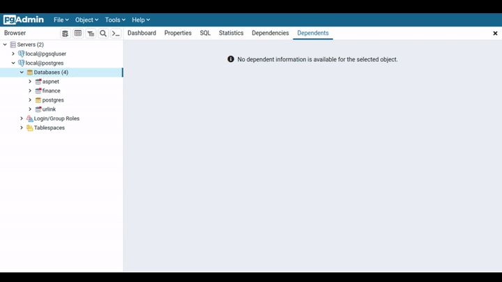

Getting Started
Starting Database with Docker
docker run --name <docker_name>
-e POSTGRES_PASSWORD=<password>
-d -p 5432:5432 postgres:13.3
docker exec -it <docker_name> bash
psql -U postgres
Installing PostgreSQL on windows
- https://www.postgresql.org/download/windows/
Installing PostgreSQL on MacOS
https://www.postgresql.org/download/macosx/
Setup and Basics : using apt
Installation
sudo apt-get install postgresql
Usage commands
service postgresql
Switch to default user
sudo su postgres
Getting Started
Connect to a database
Connection options:
-h, --host=HOSTNAME
# database server host or socket directory
# (default: "local socket")
-p, --port=PORT
# database server port
# (default: "5432")
-U, --username=USERNAME
# database user name (default: "root")
-w, --no-password
# never prompt for password
-W, --password
# force password prompt (should happen automatically)
- Here port : 5432 is default and can be get from
psql --help postgresis the super user. Create another user and connect using that.- to connect to database with user :
\c db_name user_name
Commands
-- to list all tables
\dt
-- to list all databases
\l
-- to list all table spaces
\db
-- to list all schemas
\dn
-- to list all indices
\di
-- to list all sequences
\ds
-- to list all roles
\dg
-- to list data types
\dT
-- to list all domain datatypes
\dD
-- to list all views
\dv
-- to list previous commands
\g
-- to list Command History
\s
-- to run command from file
\i filename
-- it should be inside the server
-- to list help
\h
\h create table
-- to display null
\pset null (null)
-- to make terminal better
\pset linestyle unicode
\pset border 2
-- to watch a command in time
\watch 2
-- to turn on timing
\timing
Load Data
Download the sample data file from here
- https://drive.google.com/file/d/1vsFVuybjNDacNaV5LmaSI__a6dCpEdmT/view?usp=sharing
